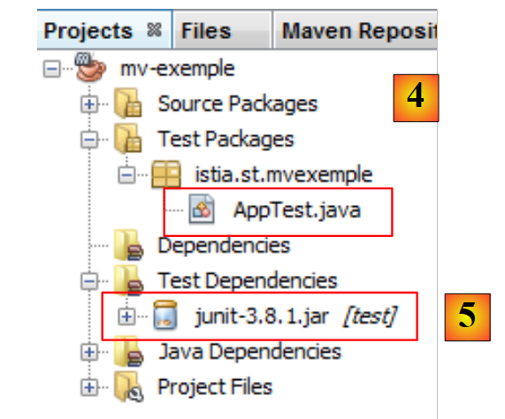
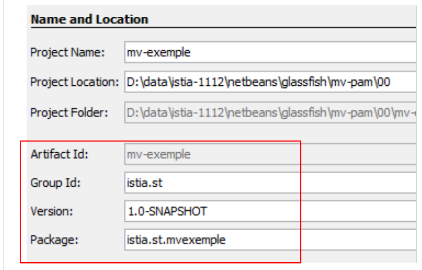
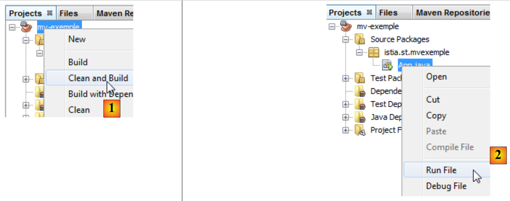
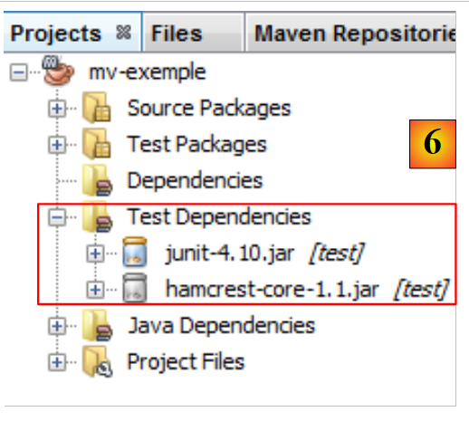

3. Les outils du document
Les exemples du document ont été testés avec les outils suivants :
- Netbeans de la version 6.8 à la version 7.1.2. L'installation de Netbeans est décrite dans [ref3] au paragraphe 1.3.1.
- Wampserver version 2.2. L'installation de WampServer est est décrite dans [ref3] au paragraphe 1.3.3 ;
- Maven est intégré à Netbeans. Nous décrivons maintenant cet outil.
3.1. Maven
3.1.1. Introduction
Maven est disponible à l'URL [http://maven.apache.org/index.html ]. Selon ses créateurs :
Maven's primary goal is to allow a developer to comprehend the complete state of a development effort in the shortest period of time. In order to attain this goal there are several areas of concern that Maven attempts to deal with:
- Making the build process easy
- Providing a uniform build system
- Providing quality project information
- Providing guidelines for best practices development
- Allowing transparent migration to new features
Maven est intégré dans Netbeans et nous allons l'utiliser pour une seule de ses caractéristiques : la gestion des bibliothèques d'un projet. Celles-ci sont formées de l'ensemble des archives jars qui doivent être dans le Classpath du projet. Elles peuvent être très nombreuses. Par exemple, nos projets futurs vont utiliser l'ORM (Object Relational Mapper) Hibernate. Cet ORM est composé de dizaines d'archives jar. L'intérêt de Maven est qu'il nous affranchit de les connaître toutes. Il nous suffit d'indiquer dans notre projet que nous avons besoin d'Hibernate en donnant toutes les informations utiles pour trouver l'archive principale de cet ORM. Maven télécharge alors également toutes les bibliothèques nécessaires à Hibernate. On appelle cela les dépendances d'Hibernate. Une bibliothèque nécessaire à Hibernate peut elle même dépendre d'autres archives. Celles-ci seront également téléchargées. Toutes ces bibliothèques sont placées dans un dossier appelé le dépôt local de Maven.
Un projet Maven est facilement partageable. Si on le transfère d'un poste à un autre et que les dépendances du projet ne sont pas présentes dans le dépôt local du nouveau poste, elles seront téléchargées.
Maven peut être utilisé seul ou intégré à un EDI (Environnement de Développement Intégré) tel Netbeans ou Eclipse.
Créons un projet Maven dans Netbeans :
 |
- en [1], créer un nouveau projet,
- en [2], choisir la catégorie [Maven] et le type de projet [Java Application],
 |
- en [3], désigner le dossier parent du dossier du nouveau projet,
- en [4], donner un nom au projet,
- en [5], le projet généré.
Examinons les éléments du projet et explicitons le rôle de chacun.
 |
- en [1] : les différentes branches du projet :
- [Source packages] : les classes Java du projet ;
- [Test packages] : les classes de test du projet ;
- [Dependencies] : les archives .jar nécessaires au projet et gérées par Maven ;
- [Test Dependencies] : les archives .jar nécessaires aux tests du projet et gérées par Maven ;
- [Java Dependencies] : les archives .jar nécessaires au projet et non gérées par Maven ;
- [Project Files] : fichiers de configuration de Maven et Netbeans,
 |
- en [3], la branche [Source Packages],
Cette branche contient les codes source des classes Java du projet. Netbeans a généré une classe par défaut :
package istia.st.mvexemple;
/**
* Hello world!
*
*/
public class App {
public static void main(String[] args) {
System.out.println("Hello World!");
}
}
 |
- en [4], la branche [Test Packages] qui contient les codes source des classes de test du projet,
- en [5], la bibliothèque JUnit 3.8 nécessaire à l'exécution des tests,
Netbeans a généré une classe par défaut :
package istia.st.mvexemple;
import junit.framework.Test;
import junit.framework.TestCase;
import junit.framework.TestSuite;
/**
* Unit test for simple App.
*/
public class AppTest extends TestCase {
/**
* Create the test case
*
* @param testName
* name of the test case
*/
public AppTest(String testName) {
super(testName);
}
/**
* @return the suite of tests being tested
*/
public static Test suite() {
return new TestSuite(AppTest.class);
}
/**
* Rigourous Test :-)
*/
public void testApp() {
assertTrue(true);
}
}
C'est un test JUnit 3.8. Nous utiliserons par la suite des test JUnit 4.x.
 |
- en [6], la branche [Dependencies] est ici vide,
Cette branche affiche toute les bibliothèques nécessaires au projet et gérées par Maven. Toutes les bibliothèques listées ici sont automatiquement téléchargées par Maven. C'est pourquoi un projet Maven a besoin d'un accès Internet. Les bibliothèques téléchargées vont être stockées en local. Si un autre projet a besoin d'une bibliothèque déjà présente en local, celle-ci ne sera alors pas téléchargée. Nous verrons que cette liste de bibliothèques ainsi que les dépôts où on peut les trouver sont définis dans le fichier de configuration du projet Maven.
 |
- en [7], les bibliothèques nécessaires au projet et non gérées par Maven,
 |
- en [7], le fichier [pom.xml] de configuration du projet Maven. POM signifie Project Object Model. On sera amené à intervenir directement sur ce fichier.
Le fichier [pom.xml] généré est le suivant :
<project xmlns="http://maven.apache.org/POM/4.0.0" xmlns:xsi="http://www.w3.org/2001/XMLSchema-instance"
xsi:schemaLocation="http://maven.apache.org/POM/4.0.0 http://maven.apache.org/xsd/maven-4.0.0.xsd">
<modelVersion>4.0.0</modelVersion>
<groupId>istia.st</groupId>
<artifactId>mv-exemple</artifactId>
<version>1.0-SNAPSHOT</version>
<packaging>jar</packaging>
<name>mv-exemple</name>
<url>http://maven.apache.org</url>
<properties>
<project.build.sourceEncoding>UTF-8</project.build.sourceEncoding>
</properties>
<dependencies>
<dependency>
<groupId>junit</groupId>
<artifactId>junit</artifactId>
<version>3.8.1</version>
<scope>test</scope>
</dependency>
</dependencies>
</project>
- les lignes 5-8 définissent l'objet (artifact) Java qui va être créé par le projet Maven. Ces informations proviennent de l'assistant qui a été utilisé lors de la création du projet :
 |
Un objet Maven est défini par quatre propriétés :
- [groupId] : une information qui ressemble à un nom de package. Ainsi les bibliothèques du framework Spring ont groupId=org.springframework, celles du framework JSF ont groupId=javax.faces,
- [artifactId] : le nom de l'objet Maven. Dans le groupe [org.springframework] on trouve ainsi les artifactId suivants : spring-context, spring-core, spring-beans, ... Dans le groupe [javax.faces], on trouve l'artifactId jsf-api,
- [version] : n° de version de l'artifact Maven. Ainsi l'artifact org.springframework.spring-core a les versions suivantes : 2.5.4, 2.5.5, 2.5.6, 2.5.6.SECO1, ...
- [packaging] : la forme prise par l'artifact, le plus souvent war ou jar.
Notre projet Maven va générer un [jar] (ligne 8) dans le groupe [istia.st] (ligne 5), nommé [mv-exemple] (ligne 6) et de version [1.0-SNAPSHOT] (ligne 7). Ces quatre informations doivent définir de façon unique un artifact Maven.
Les lignes 17-24 listent les dépendances du projet Maven, c'est à dire la liste des bibliothèques nécessaires au projet. Chaque bibliothèque est définie par les quatre informations (groupId, artifactId, version, packaging). Lorsque l'information packaging est absente comme ici, le packaging jar est utilisé. On y ajoute une autre information, scope qui fixe à quels moments de la vie du projet on a besoin de la bibliothèque. La valeur par défaut est compile qui indique que la bibliothèque est nécessaire à la compilation et à l'exécution. La valeur test signifie que la bibliothèque est nécessaire lors des test du projet. C'est le cas ici avec la bibliothèque JUnit 3.8.1. Si cette bibliothèque n'est pas présente dans le dépôt local du poste, elle est téléchargée.
3.1.2. Exécution du projet
Nous exécutons le projet :
 |
En [1], le projet Maven est construit puis exécuté [1]. Les logs dans la console Netbeans sont les suivants :
Le résultat est ligne 23. On voit que même pour ce cas simple, Maven a téléchargé des éléments (lignes 17 et 20).
3.1.3. Le système de fichiers d'un projet Maven
 |
- [1] : le système de fichiers du projet est dans l'onglet [Files],
- [2] : les sources Java sont dans le dossier [src / main / java],
- [3] : les sources Java des tests sont dans le dossier [src / test / java],
- [4] : le dossier [target] est créé par la construction (build) du projet,
- [5] : ici, la construction du projet a créé une archive [mv-exemple-1.0-SNAPSHOT.jar].
3.1.4. Le dépôt Maven local
Nous avons dit que Maven téléchargeait les dépendances nécessaires au projet et les stockait localement. On peut explorer ce dépôt local :
 |
- en [1], on choisit l'option [Window / Other / Maven Repository Browser],
- en [2], un onglet [Maven Repositories] s'ouvre,
- en [3], il contient deux branches, une pour le dépôt local, l'autre pour le dépôt central. Ce dernier est gigantesque. Pour visualiser son contenu, il faut mettre à jour son index [4]. Cette mise à jour dure plusieurs dizaines de minutes.
 |
- en [5], les bibliothèques du dépôt local,
- en [6], on y trouve une branche [istia.st] qui correspond au [groupId] de notre projet,
- en [7], on accède aux propriétés du dépôt local,
- en [8], on a le chemin du dépôt local. Il est utile de le connaître car parfois (rarement) Maven n'utilise plus la dernière version du projet. On fait des modifications et on constate qu'elles ne sont pas prises en compte. On peut alors supprimer manuellement la branche du dépôt local correspondant à notre [groupId]. Cela force Maven à recréer la branche à partir de la dernière version du projet.
3.1.5. Chercher un artifact avec Maven
Apprenons maintenant à chercher un artifact avec Maven. Partons de la liste des dépendances actuelles du fichier [pom.xml] :
<project xmlns="http://maven.apache.org/POM/4.0.0" xmlns:xsi="http://www.w3.org/2001/XMLSchema-instance"
xsi:schemaLocation="http://maven.apache.org/POM/4.0.0 http://maven.apache.org/xsd/maven-4.0.0.xsd">
<modelVersion>4.0.0</modelVersion>
<groupId>istia.st</groupId>
<artifactId>mv-exemple</artifactId>
<version>1.0-SNAPSHOT</version>
<packaging>jar</packaging>
<name>mv-exemple</name>
<url>http://maven.apache.org</url>
<properties>
<project.build.sourceEncoding>UTF-8</project.build.sourceEncoding>
</properties>
<dependencies>
<dependency>
<groupId>junit</groupId>
<artifactId>junit</artifactId>
<version>3.8.1</version>
<scope>test</scope>
</dependency>
</dependencies>
</project>
Les lignes 17-23 définissent des dépendances qu'on va modifier pour utiliser les bibliothèques dans leur version la plus récente.
 |
Tout d'abord, nous supprimons les dépendances actuelles [1]. Le fichier [pom.xml] est alors modifié :
<project xmlns="http://maven.apache.org/POM/4.0.0" xmlns:xsi="http://www.w3.org/2001/XMLSchema-instance"
xsi:schemaLocation="http://maven.apache.org/POM/4.0.0 http://maven.apache.org/xsd/maven-4.0.0.xsd">
<modelVersion>4.0.0</modelVersion>
<groupId>istia.st</groupId>
<artifactId>mv-exemple</artifactId>
<version>1.0-SNAPSHOT</version>
<packaging>jar</packaging>
<name>mv-exemple</name>
<url>http://maven.apache.org</url>
<properties>
<project.build.sourceEncoding>UTF-8</project.build.sourceEncoding>
</properties>
<dependencies></dependencies>
</project>
Ligne 17, la dépendance supprimée n'apparaît plus dans [pom.xml]. Maintenant, recherchons-la dans les dépôts Maven.
 |
- en [1], on ajoute une dépendance au projet,
- en [2], on doit préciser des informations sur l'artifact cherché (groupId, artifactId, version, packaging (Type) et scope). Nous commençons par préciser le [groupId] [3],
- en [4], nous tapons [espace] pour faire afficher la liste des artifacts possibles. Ici [junit] et [jnit-dep]. Nous choisissons [junit],
- en [5], en procédant de la même façon, on choisit la version la plus récente. Le type de packaging est jar,
- en [6], nous choisissons la portée test pour indiquer que la dépendance n'est nécessaire qu'aux tests.
 |
En [6], les dépendances ajoutées apparaissent dans le projet. Le fichier [pom.xml] reflète ces changements :
<project xmlns="http://maven.apache.org/POM/4.0.0" xmlns:xsi="http://www.w3.org/2001/XMLSchema-instance"
xsi:schemaLocation="http://maven.apache.org/POM/4.0.0 http://maven.apache.org/xsd/maven-4.0.0.xsd">
<modelVersion>4.0.0</modelVersion>
<groupId>istia.st</groupId>
<artifactId>mv-exemple</artifactId>
<version>1.0-SNAPSHOT</version>
<packaging>jar</packaging>
<name>mv-exemple</name>
<url>http://maven.apache.org</url>
<properties>
<project.build.sourceEncoding>UTF-8</project.build.sourceEncoding>
</properties>
<dependencies>
<dependency>
<groupId>junit</groupId>
<artifactId>junit</artifactId>
<version>4.10</version>
<scope>test</scope>
<type>jar</type>
</dependency>
</dependencies>
</project>
On notera que fichier [pom.xml] ne mentionne pas la dépendance [hamcrest-core-1.1] que nous voyons en [6]. Cela parce que c'est une dépendance de JUnit 4.10 et non du projet lui-même. Cela est signalé par une icône différente dans la branche [Dependencies]. Elle a été téléchargée automatiquement.
Supposons maintenant qu'on ne connaisse pas le [groupId] de l'artifact que l'on désire. Par exemple, on veut utiliser Hibernate comme ORM (Object Relational Mapper) et c'est tout ce qu'on sait. On peut aller alors sur le site [http://mvnrepository.com/] :
 |
En [1], on peut taper des mots clés. Tapons hibernate et lançons la recherche.
 |
- en [2], choisissons le [groupId] org.hibernate et l'[artifactId] hibernate-core,
- en [3], choisissons la version 4.1.2-Final,
- en [4], nous obtenons le code Maven à coller dans le fichier [pom.xml]. Nous le faisons.
<project xmlns="http://maven.apache.org/POM/4.0.0" xmlns:xsi="http://www.w3.org/2001/XMLSchema-instance"
xsi:schemaLocation="http://maven.apache.org/POM/4.0.0 http://maven.apache.org/xsd/maven-4.0.0.xsd">
<modelVersion>4.0.0</modelVersion>
<groupId>istia.st</groupId>
<artifactId>mv-exemple</artifactId>
<version>1.0-SNAPSHOT</version>
<packaging>jar</packaging>
<name>mv-exemple</name>
<url>http://maven.apache.org</url>
<properties>
<project.build.sourceEncoding>UTF-8</project.build.sourceEncoding>
</properties>
<dependencies>
<dependency>
<groupId>junit</groupId>
<artifactId>junit</artifactId>
<version>4.10</version>
<scope>test</scope>
<type>jar</type>
</dependency>
<dependency>
<groupId>org.hibernate</groupId>
<artifactId>hibernate-core</artifactId>
<version>4.1.2.Final</version>
</dependency>
</dependencies>
</project>
Nous sauvegardons le fichier [pom.xml]. Maven entreprend alors le téléchargement des nouvelles dépendances. Le projet évolue comme suit :
 |
- en [5], la dépendance [hibernate-core-4.1.2-Final]. Dans le dépôt où il a été trouvé, cet [artifactId] est lui aussi décrit par un fichier [pom.xml]. Ce fichier a été lu et Maven a découvert que l'[artifactId] avait des dépendances. Il les télécharge également. Il fera cela pour chaque [artifactId] téléchargé. Au final, on trouve en [6] des dépendances qu'on n'avait pas demandées directement. Elles sont signalées par une icône différente de celle de l'[artifactId] principal.
Dans ce document, nous utilisons Maven principalement pour cette caractéristique. Cela nous évite de connaître toutes les dépendances d'une bibliothèque que l'on veut utiliser. On laisse Maven les gérer. Par ailleurs, en partageant un fichier [pom.xml] entre développeurs, on est assuré que chaque développeur utilise bien les mêmes bibliothèques.
Dans les exemples qui suivront, nous nous conterons de donner le fichier [pom.xml] utilisé. Le lecteur n'aura qu'à l'utiliser pour se trouver dans les mêmes conditions que le document. Par ailleurs les projets Maven sont reconnus par les principaux IDE Java (Eclipse, Netbeans, IntelliJ, JDeveloper). Aussi le lecteur pourra-t-il utiliser son IDE favori pour tester les exemples.